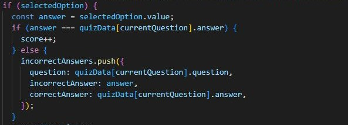

Browse My Other
Projects

Website for Yasporbi Middle School

Data Warehouse using Talend

See My Recent
Website for Yasporbi Middle School
As part of a voluntary initiative under the Putera Sampoerna Foundation's Guru Binar program, me and my group organized a digital literacy workshop for students at Yasporbi Middle School. To support the workshop, we developed a website to provide online access to the workshop materials and resources.
This workshop aimed to educate middle school
students on the importance of critical thinking in navigating through
the internet. As the organizer, I collaborated with a team of fellow
students to plan and coordinate the workshop activities.
To complement the in-person workshop, we recognized the need for an
online platform to host the workshop materials and resources.
Utilizing my web development skills, I built the website from scratch
using HTML and CSS. The website served as a central repository for the
workshop content, allowing students to access the materials and continue
their learning
The web also has a quiz feature to enable students to test their knowledge and skill levels on the topics covered during the workshop. The quiz consisted of multiple-choice questions with randomized answer options. Upon selecting an option, the program would automatically evaluate the answer, checking the correct and incorrect choices. Upon completing the quiz, students could then compare their selected answer with the answer key.
Browse My Other